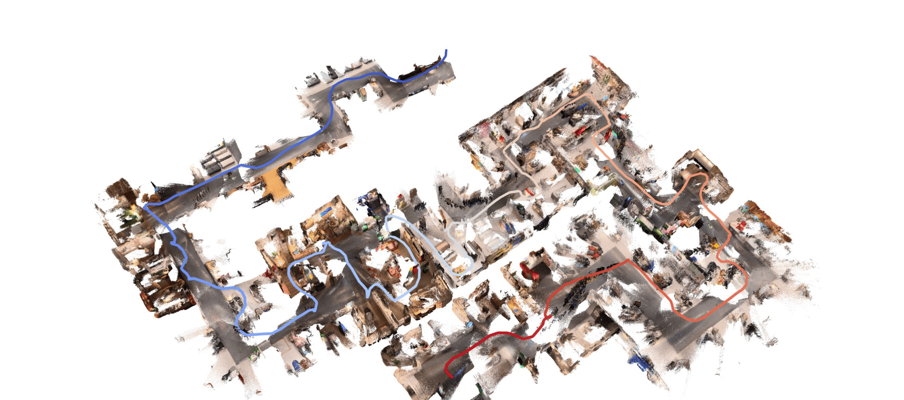

Research Interests
- 3D Foundation Models
- World Models
I am a PhD student at Nanjing University, supervised by Prof. Yao Yao in 3DV-lab. I am also a member of CITE lab, working closely with Prof. Qiu Shen and Prof. Xun Cao. Currently, I am also a research intern at RobbyAnt, mentored by Prof. Yinghao Xu. Previously, I was a master student at Nankai University, supervised by Prof. Ming-Ming Cheng.
Outside of research, I am a vibe coding enthusiast — currently experimenting with building small projects in this style. video-to-notebook is one of them.
Research Highlights
video-to-notebook
Open Source
Read open-course video as one merged notebook using claude/codex — textbook + concept encyclopedia in a single static site.
View Project

Flow Distillation Sampling
ICLR 2025
Regularizing 3D Gaussians with Pre-trained Matching Priors
View ProjectPointrix
Open Source
A differentiable point-based rendering library supporting 3D Gaussian Splatting
View Project
SG-Conv
IEEE TIP 2021
Spatial Information Guided Convolution for Real-Time RGBD Semantic Segmentation
View Project
Publications
Representative works are highlighted (* denotes equal contribution)


Blog
Notes on research, tools, and what I'm thinking about — written when the thought is worth keeping.